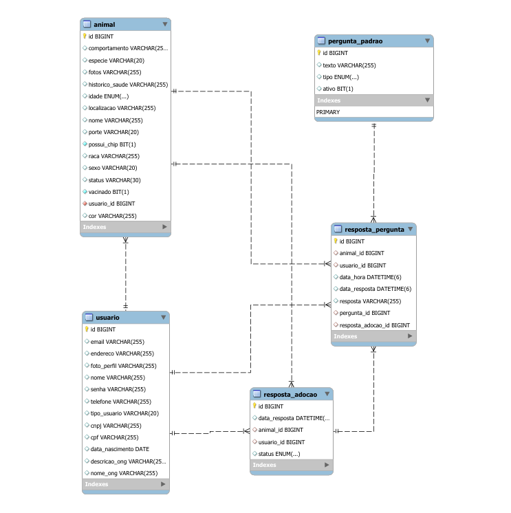
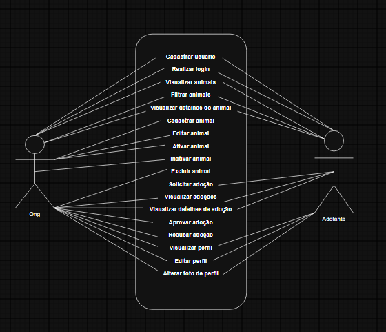
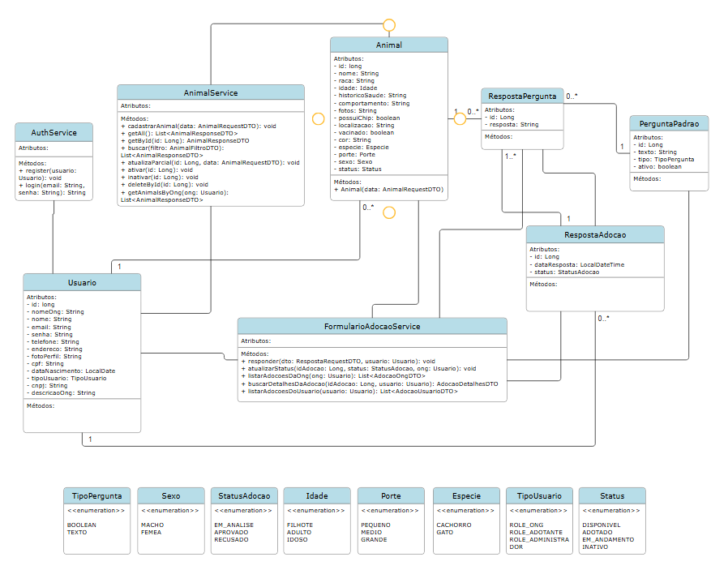

Sobre o projeto
O Adota Pet é uma plataforma web desenvolvida com o objetivo de facilitar a adoção responsável de animais resgatados.
A plataforma permite que ONGs cadastrem animais disponíveis para adoção e que pessoas interessadas encontrem animais, conheçam seus dados e realizem uma solicitação de adoção.
Objetivos
- Facilitar o processo de adoção responsável.
- Conectar ONGs e pessoas interessadas em adotar.
- Divulgar animais resgatados disponíveis para adoção.
- Organizar as solicitações de adoção.
- Auxiliar as ONGs no gerenciamento dos animais.
Principais funcionalidades
- Cadastro e autenticação de usuários.
- Cadastro de ONGs.
- Cadastro e gerenciamento de animais.
- Busca e filtros de animais.
- Visualização dos detalhes dos animais.
- Perfil das ONGs.
- Formulário de adoção.
- Acompanhamento das solicitações.
- Aprovação ou recusa de solicitações pela ONG.
- Atualização do status dos animais.
Tecnologias utilizadas
Java
Spring Boot
Spring Security
JWT
JPA
MySQL
React
TypeScript
Vite
Tailwind CSS
Axios
Diagramas do projeto
Diagrama Entidade-Relacionamento (DER)

Diagrama de Casos de Uso

Diagrama de Classes

Projeto de Extensão
Curso: Engenharia de Software
Projeto: Adota Pet
Plataforma Web para Adoção de Animais Resgatados.